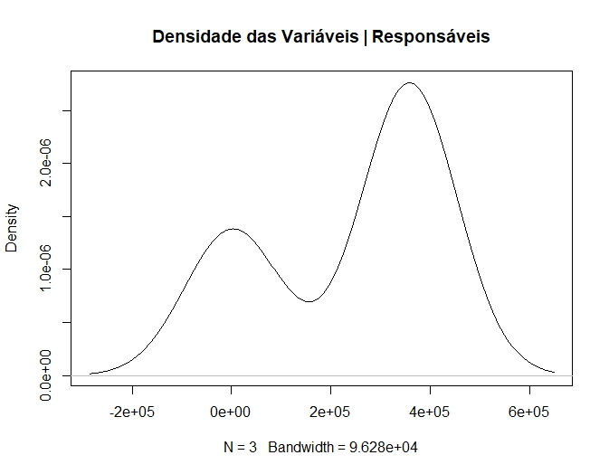
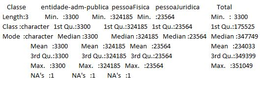

Classes x Tipo de Responsável
Total de entradas iniciais, sem remoção de dados faltantes
Essa diferença no dataset corresponde a 9.394 dados faltantes de Tipo de Responsável na classe de imóveis dominiais.
| Classe | Entidade da Adm. Púb. Fed. | Pessoa Fìsica | Pessoa Jurídica | Total |
|---|---|---|---|---|
| Dominial | - | 324185 | 23564 | 347749 |
| Uso Especial | - | 3300 | - | - |
| Total | 3300 | 324185 | 23564 | 351049 |
 
Observado um volume muito grande de pessoas físicas associadas ao imóveis de Classe Dominial, comparando as informações sobre classes entre os datasets (responsáveis e imóveis), verificamos que não são equivalentes, mas possivelmente estabeleçam umra relação de 1 para n, onde um único responsável responde pelo registro de diversos imóveis.